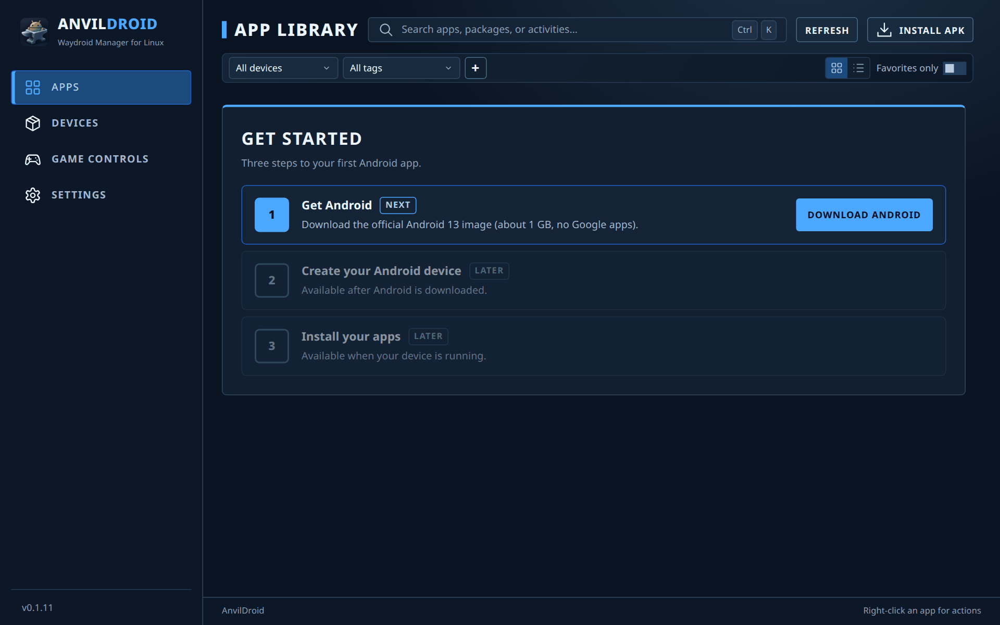
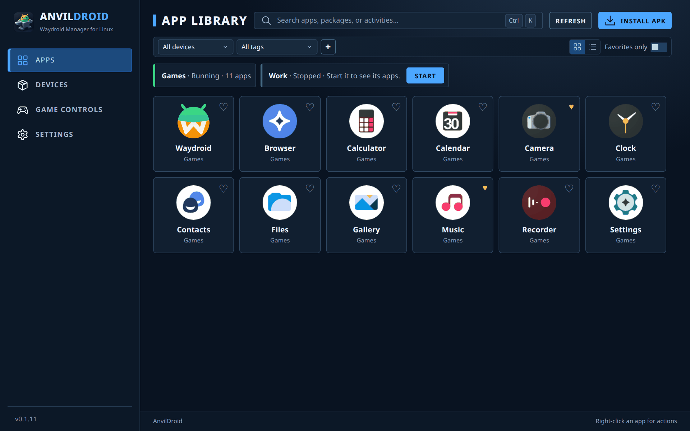
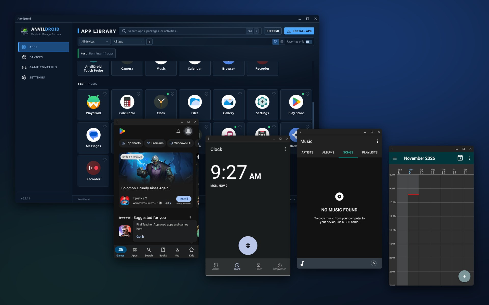
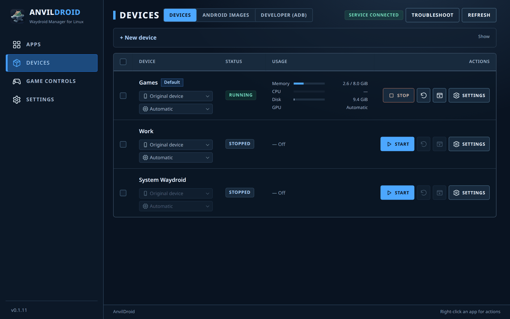
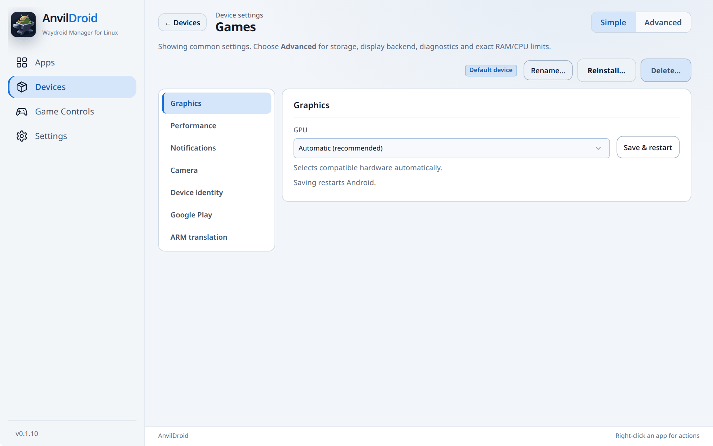
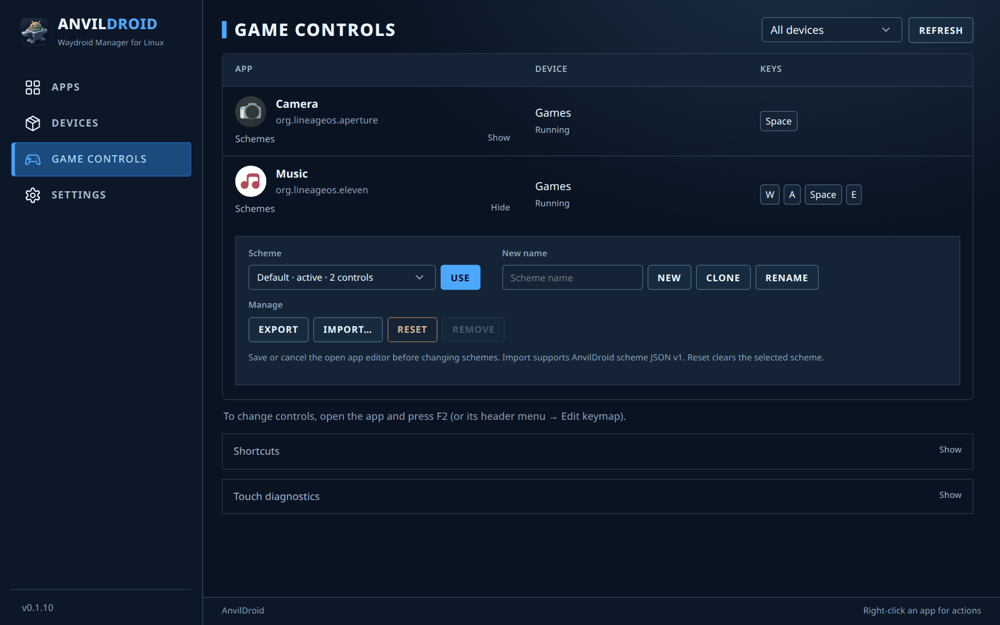
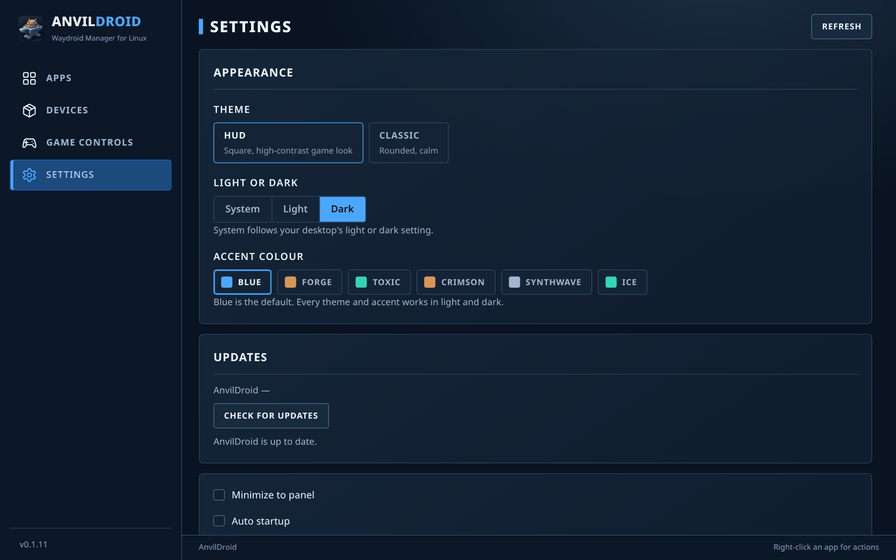
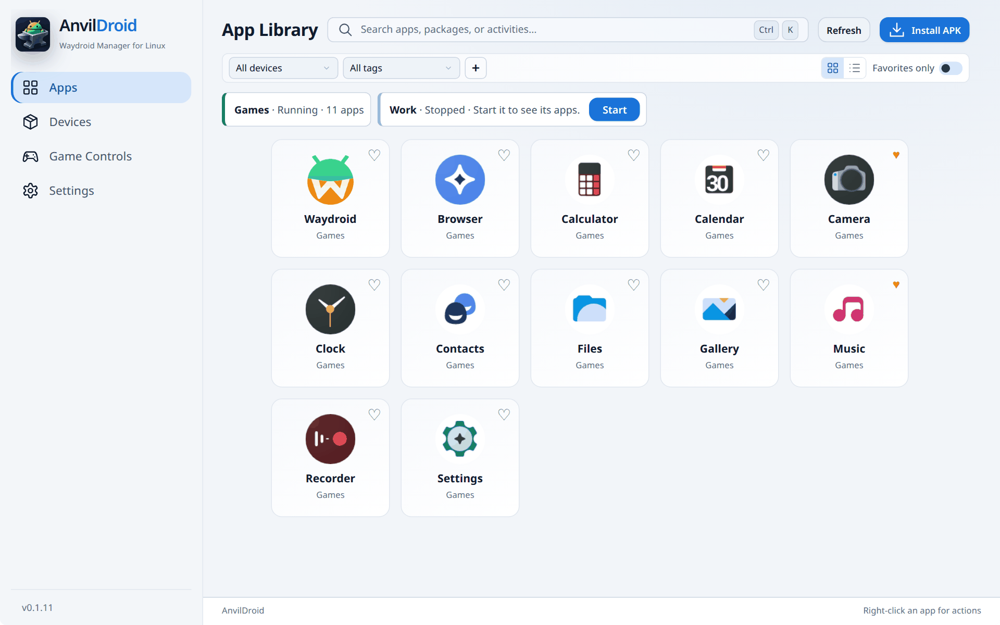

The basics
The sidebar has four pages: Apps, Devices, Game Controls and Settings.
A device is one isolated Android system with its own apps, data and settings. Under the hood it is a Waydroid runtime. You can run several devices side by side, for example one for games and one for work. If you already use Waydroid, AnvilDroid lists it as System Waydroid.
First start

When no device exists yet, the Apps page shows Get started:
- Download Android. Fetches and verifies the official Android 13 image (about 1 GB, no Google apps). If the Waydroid tools are missing, this step shows Open setup instead, which installs them.
- Create and start. Creates a device called “My Android” and boots it. The first start takes a few minutes while the image is prepared.
- Install APK. Available once the device is running.
You can keep using the app while a step runs.
Apps

- Open an app by clicking it. Every Android app opens in its own desktop window. The Waydroid tile opens that device's full Android UI instead.
- Install an APK: click Install APK, choose the file, then pick one or more running devices.
- Device chips above the grid show each device's state and app count. A stopped device has its own Start button.
- Find apps: search with Ctrl+K, filter by device or tag, or turn on Favorites only. Click the heart on a tile to favorite it. The + button next to the tag filter creates and manages tags.
- Grid or list: switch with the two buttons at the right of the filter bar. Apps from several devices are grouped per device.
- Right-click an app for App details, Android App Info, Compatibility… (per-app Fake Wi-Fi and Mouse as touch), Force-stop…, Create/update menu shortcut and Uninstall….

Only apps from running devices are listed. New apps get a shortcut in your desktop's application menu automatically; you can turn that off in Settings.
Devices

The Devices page has three tabs: Devices, Android images and Developer (ADB).
- Create a device: open + New device, enter a name, choose an image and click Create device. You need an image first.
- Row actions: Start or Stop, Restart, Open Waydroid (the full Android UI) and Settings. Tick several rows to start, stop or restart them together.
- Quick switches: the two menus under each name change the device identity (for example Pixel 8 Pro) and the GPU. A running device restarts to apply them.
- Usage shows memory, CPU, disk and GPU while a device runs.
- The Default tag marks the device used when nothing else is chosen. Change it with Set as default in the device's settings.
- Troubleshoot shows setup checks and Restart controller.
Android images
The Android images tab lists the images you can create devices from.
- Official images: download Waydroid VANILLA (no Google apps) or GAPPS (with Google Play). Downloads are verified before use.
- Import custom image…: use your own
system.imgandvendor.imgfrom a folder, a ZIP file or a URL. ext4, EROFS and SquashFS work. Custom images are experimental. - Create device starts a new device from an image. Reinstall replaces the Android system of a stopped device and erases its apps and data.
Device settings

Open a device's Settings from the Devices page and pick a category on the left. Simple shows the common categories; Advanced adds storage, display backend, diagnostics and exact RAM/CPU limits. The buttons at the top set the default device, rename, reinstall or delete it. Stop a device before deleting it.
| Category | What it does |
|---|---|
| Graphics | Choose the GPU, or Automatic. Saving restarts Android. |
| Display | Desktop windows (one window per app) or the full Android UI. One mode at a time. |
| Performance | RAM and CPU limits, with presets from Light to Unlimited. |
| Notifications | Show Android notifications on your desktop; turn them off per app. |
| Camera | Pass one or more of this computer's cameras to Android. |
| Device identity | Spoof the device model (Pixel, Galaxy, ROG Phone…). Some apps behave differently per model. |
| Google Play | Help with Play Protect registration on GAPPS images. |
| ARM translation | Install libndk_translation or libhoudini to run ARM-only apps. |
| Storage Advanced | Where the device's data lives and moving it to another disk. Shared folders from your home appear under /sdcard/AnvilDroid. |
| Managed copy Advanced | Import System Waydroid's apps and data into a separate device. |
| Diagnostics Advanced | Session details and Export report, a JSON file for bug reports. |
Game controls

Map your keyboard and mouse to touch in any Android app or game.
- Open the app, then press F2 (or the window's header menu → Edit keymap). An editor opens on top of the app.
- Add controls where the game expects touches: tap, hold, joystick (WASD), swipe, repeat, skill, macro, aim, mouse-to-touch and FPS mouse look.
- Save. The controls work whenever that app has focus.
| Key | Action |
|---|---|
| F2 | Edit keymap |
| F3 | Turn the controls on or off, for example to type in chat |
| F4 | Show or hide the control markers |
| Esc | Cancel editing |
The Game Controls page lists every app with saved controls, per device. Open Schemes under an app to keep several layouts:
- Use makes the selected scheme active.
- New, Clone and Rename use the name typed in New name.
- Export saves a scheme as an AnvilDroid JSON file; Import… loads one.
- Reset clears the selected scheme. Remove deletes a custom scheme that is not active; Default cannot be removed.
Save or cancel the editor in the app window before changing schemes. Touch diagnostics installs a small probe app so you can check that touches arrive.
Developer (ADB)
The Developer (ADB) tab connects a running device to ADB so Android Studio can see it. Click Connect for a device,
select it in Android Studio and approve USB debugging in Android if asked. Under Android SDK you can point to the same
adb that Android Studio uses. Connections stay on this computer and end when the device or controller stops.
Settings and themes

- Theme: HUD (square, high-contrast game look; the default) or Classic (rounded, calm). Both have the same pages and controls.
- Light or dark: System follows your desktop, or pick one.
- Accent colour: Blue, Forge, Toxic, Crimson, Synthwave or Ice.
- Updates: Check for updates downloads the right package for your system after you confirm, then restarts AnvilDroid. If you installed from the package repository, your normal system update works too.
- Minimize to panel, Auto startup, Startup minimize and automatic menu shortcuts for new apps.
- Start at login: choose which devices start when you log in.

Troubleshooting
- A device does not start: open Devices → Troubleshoot to see what is missing. Use Restart controller if the service looks stuck.
- An app misbehaves: right-click it → Force-stop… and open it again. Apps that need Wi-Fi or treat the mouse oddly can be adjusted under Compatibility….
- Banking apps, some games or DRM video refuse to run: they usually require Play Integrity, which Waydroid cannot pass.
- Report a bug: in the device's settings, switch to Advanced, open Diagnostics → Export report and attach the file to a GitHub issue.
More about limits and hardware support: compatibility and limitations.